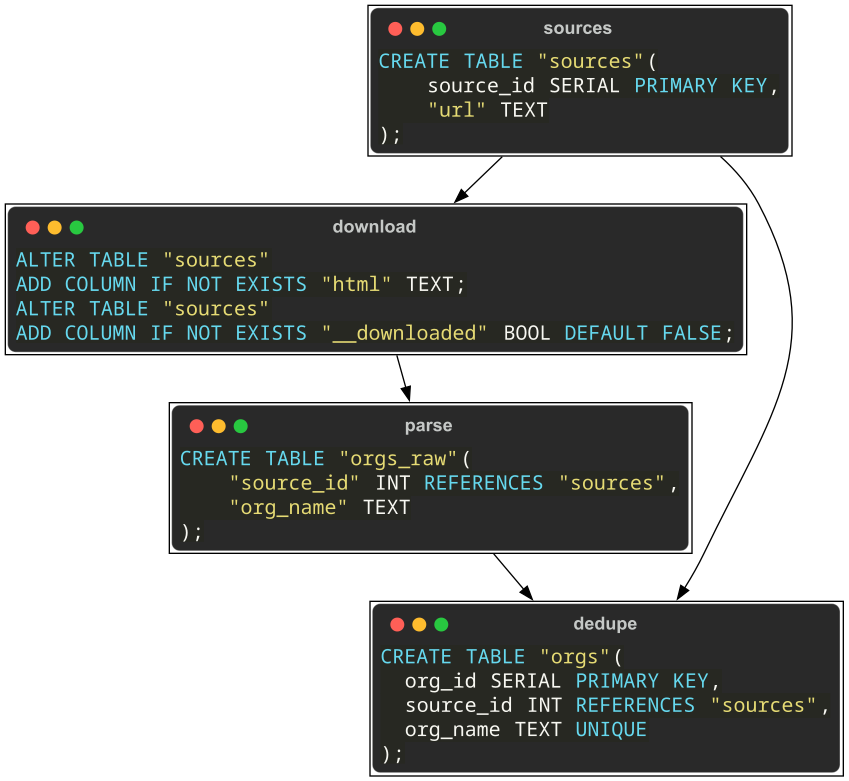

Ralsei¶
Ralsei is an unopinionated data pipeline framework for the database. It is meant to organize your whole data flow, from downloading to parsing to transformation, into a reproducible graph of tasks. Develop the pipeline as you go and resume where you last stopped in case of an error.
Overview¶
Although you can create custom tasks, you will mostly be using the 4 basic ones that either create a table or extend an existing one
language |
create table |
add columns |
|---|---|---|
sql |
CreateTableSql |
AddColumnsSql |
python |
MapToNewTable |
MapToNewColumns |
In this example URLs are loaded from a certain source file, their contents are downloaded (storing HTML in the database), a list of organizations gets parsed, then de-duplicated and assigned IDs
from pathlib import Path
from ralsei import *
class MyPipeline(Pipeline):
def __init__(self, sources: Path):
self.sources = sources
def create_tasks(self):
return {
"sources": MapToNewTable(
table=Table("sources"),
columns=[
"source_id SERIAL PRIMARY KEY",
ValueColumn("url", "TEXT")
],
fn=compose(_load_sources, add_to_input(path=self.sources))
),
"download": MapToNewColumns(
table=self.outputof("sources"),
select="""\
SELECT source_id, url FROM {{table}}
WHERE NOT {{is_done}}""",
columns=[ValueColumn("html", "TEXT")],
is_done_column="__downloaded",
fn=compose_one(_org_download, pop_id_fields("source_id"))
),
"parse": MapToNewTable(
source_table=self.outputof("download"),
select="SELECT source_id, html FROM {{source}}",
table=Table("orgs_raw"),
columns=[
ValueColumn("source_id", "INT REFERENCES {{source}}"),
ValueColumn("org_name", "TEXT")
],
fn=compose(_org_parse, pop_id_fields("source_id"))
),
"dedupe": CreateTableSql(
table=Table("orgs"),
sql="""\
CREATE TABLE {{table}}(
org_id SERIAL PRIMARY KEY,
source_id INT REFERENCES {{sources}},
org_name TEXT UNIQUE
);
{%-split-%}
INSERT INTO {{table}}
SELECT DISTINCT ON (org_name)
source_id, org_name FROM {{raw}};"""
)
}
where _org_parse and _load_sources are generator functions mapping a single row to multiple rows,
and _org_download returns column values added to the same row.
def _load_sources(path: Path):
yield { "url": ... }
def _org_parse(html: str):
yield { "org_name": ... }
def _org_download(url: str):
return { "html": ... }
With all dependencies resolved and templates rendered, this pipeline is compiled to the following graph:
{kind=link}
A task will be skipped if its output (table or columns) already exists,
and the download task additionally checks the __downloaded field to skip processed rows.
Cli¶
Now, let’s create a runnable CLI. Since our pipeline is initialized with a source file, we need an additional click argument
app = Ralsei(
MyPipeline,
[click.Option(["-s", "--sources"], type=Path, required=True)]
)
if __name__ == "__main__":
app()
To run the entire graph:
script.py -s ./sources.csv -d postgresql:///dbname run all
Additionally, you can delete/redo a certain task and its dependencies (useful during development)
script.py -s ./sources.csv -d postgresql:///dbname delete from parse
Or even control a specific task (without dependencies)
script.py -s ./sources.csv -d postgresql:///dbname run task download
Currently, postgresql and sqlite are officially supported
(although you’ll need to adjust your SQL
or make your templates universal via {% if %} blocks or macros})
Future plans¶
Make a proper visualizer/GUI
More hooks for setting up the database connection and jinja environment
Inspirations¶
dbt - similarly utilizes jinja templates
kedro - pipelines defined programmatically in python, has a visualizer
These tools, however, are more opinionated: dbt limits the ways you can structure your database (for example, you have to use surrogate keys) and kedro has a very rigid project structure.
Both are more suited for the analysis of data you already have (so, no resumable download tasks), you can even plug the outputs of this library into one of these tools to perform more advanced analysis.